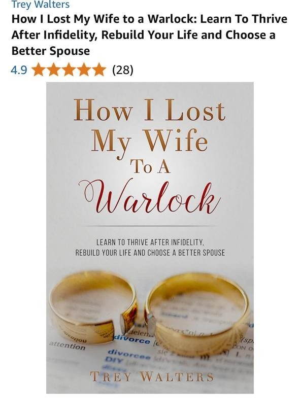
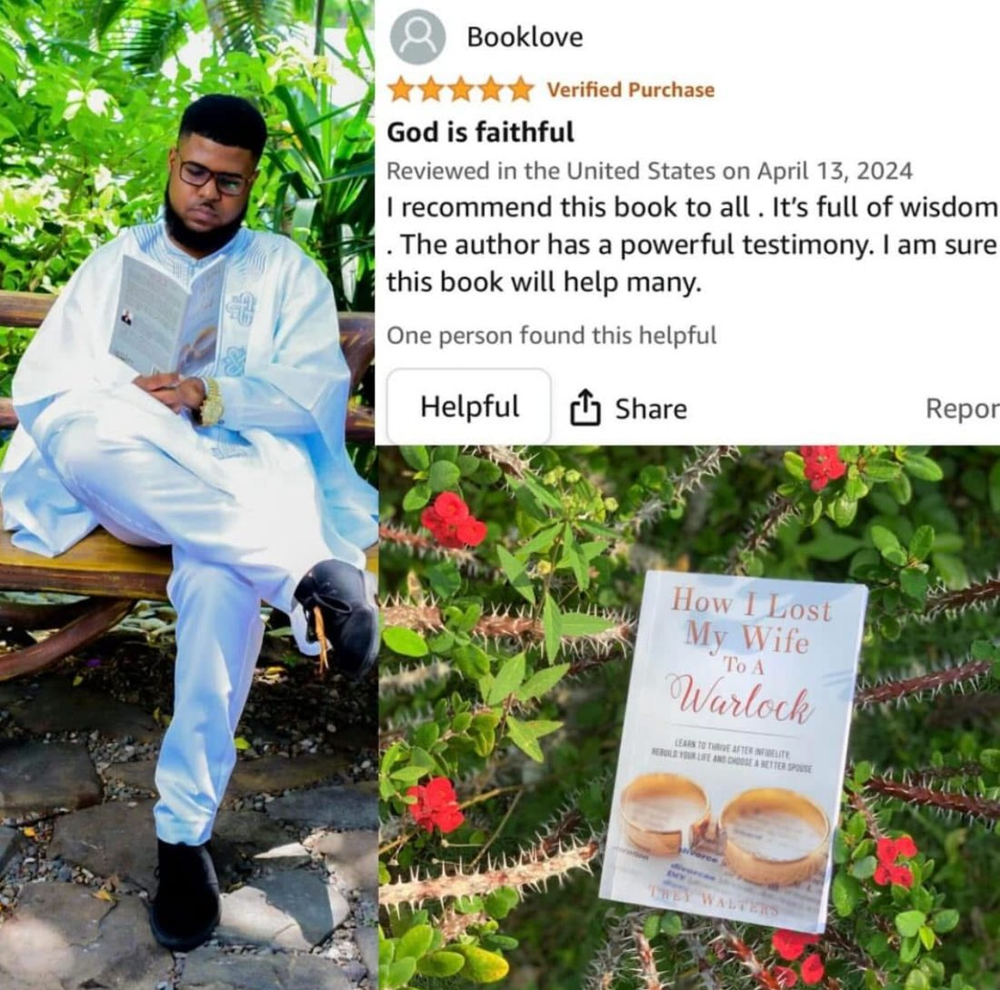
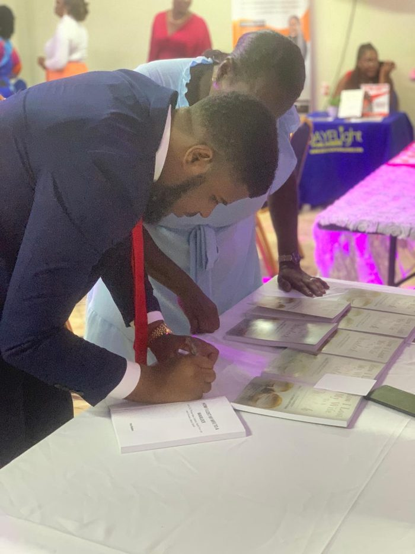

How I Lost My Wife to a Warlock
Learn To Thrive After Infidelity, Rebuild Your Life and Choose a Better Spouse by Trey Walters
Marriage begins with hope, trust, and the belief that love will last.
But when betrayal enters the picture, everything changes.
How I Lost My Wife to a Warlock is a powerful and honest journey through heartbreak, emotional recovery, and personal rebuilding. This book was written for anyone who has experienced relationship loss, infidelity, or the pain of starting over, and is ready to rise again with clarity and strength.

What You’ll Gain From This Book
Inside these pages, you’ll discover:
✔ How to recover emotionally after betrayal
✔ How to rebuild confidence after a painful relationship ending
✔ Lessons learned through heartbreak and life transition
✔ How to identify unhealthy patterns and make wiser choices
✔ Practical insight for moving forward with strength and peace
This is more than a story, it’s a guide for rebuilding your life after the unexpected.
About the Book
This book is part memoir and part practical reflection, sharing the personal experience of entering marriage with a dream, only to face a life-altering reality.
Through transparent storytelling and hard-earned lessons, Trey Walters explores what it means to confront betrayal, process emotional pain, and rediscover purpose after loss.
Whether you are healing from divorce, infidelity, or relationship disappointment, this book offers encouragement and insight for your next chapter.
📸 Meeting Readers & Supporters

Testimonials
💬 Reader Reviews
This is a good book
"This book is filled with so much knowledge and insights to those especially is preparing for a spouse each time I read it and go to sleep after I have prophetic dreams and revelation the lord spoke to me through many ways through this book the author is brave and man of wisdom and knowledge. Thank you author for this incredible book 🙏🙏"
Full of Wisdom and Guidance
"We need to continue to encourage one another and lead each other to become more faithful in God even through the trials and tribulations. For those looking to get married, this is definitely a great book on how to deal with situations that come about in marriage and how God can and will turn it around all for His glory."
Very insightful
"This book really ministered to me. Thank you, it actually open my eyes to things that I myself was doing that I shouldn’t. Really insightful"
A must have!
"The author was extremely descriptive and informative. If you’re ready to do a mental detox and relearning for divine marital alignment this is a must read. I wish a part 2 in the future. Great read!"
❓ Frequently Asked Questions
Where can I purchase the book?
The book is available now on Amazon in both Paperback and Kindle formats.
Who is this book for?
This book is for anyone who has experienced betrayal, heartbreak, divorce, or a difficult relationship season — and wants to rebuild stronger.
Is this book only for married people?
No. The lessons apply to anyone navigating love, loss, healing, and personal growth.
Does Trey offer mentorship or speaking?
Yes. Trey is available for mentorship opportunities and speaking engagements. Visit the Services page to learn more.
Your Next Chapter Starts Here
Heartbreak doesn’t have to define you. Healing is possible. Growth is possible. A stronger future is possible. If you’re ready to rebuild after betrayal or relationship loss, this book is for you.